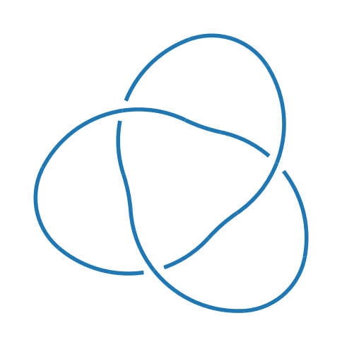
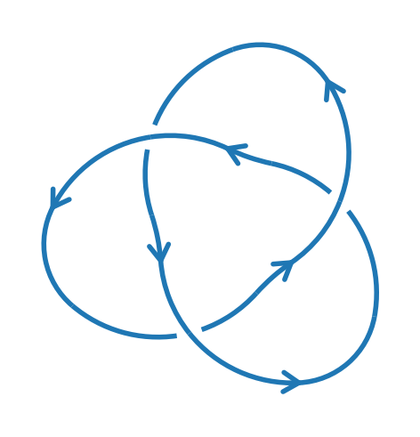
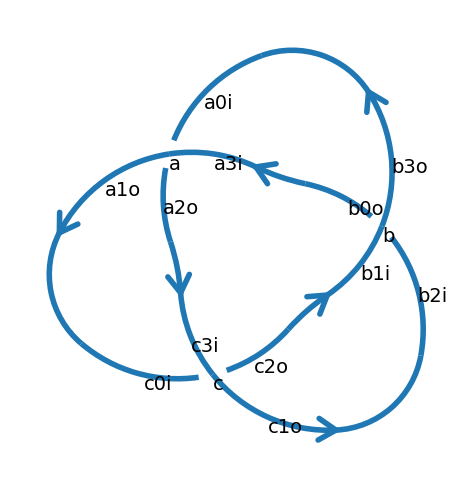

import knotpy as kp
k = kp.knot("3_1")
k
Diagram named 3_1 a → X(b3 c0 c3 b0), b → X(a3 c2 c1 a0), c → X(a1 b2 b1 a2)
kp.draw(k)

k=kp.knot("+3_1")
k
Diagram named +3_1 a → X(b3o c0i c3i b0o), b → X(a3i c2o c1o a0i), c → X(a1o b2i b1i a2o)
kp.draw(k)

kp.draw(k, label_nodes=True, label_endpoints=True)
